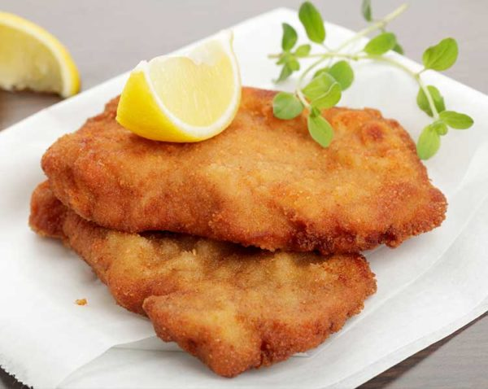

How to make Cotolette

Dish description
The cotoletta is a traditional Italian dish made with breaded and fried meat, best known in its most famous version: the cotoletta alla milanese.
It generally consists of a slice of meat (originally veal, with the bone), dipped in egg and breadcrumbs, then fried in butter until it develops
a crispy golden crust on the outside and tender, juicy meat on the inside.
Ingredients
- Chicken breast - 200 g
- Breadcrumbs - 120 g
- Clarified butter - 200 g
- Egg - 1
- Salt
Steps
- Cut the chicken breast into thin slices
- Whisk the egg in a bowl and season it with salt
- Prepeare 2 different plates, one with flour and one with breadcrumbs
- Pass each cutlet in the flour, then in the egg, and finally in the breadcrumbs
- Heat the clarified butter
- Fry each cutlet 2 minutes per side, then remove them from the pan
- Dry each cutlet with paper towel
Return to Homepage